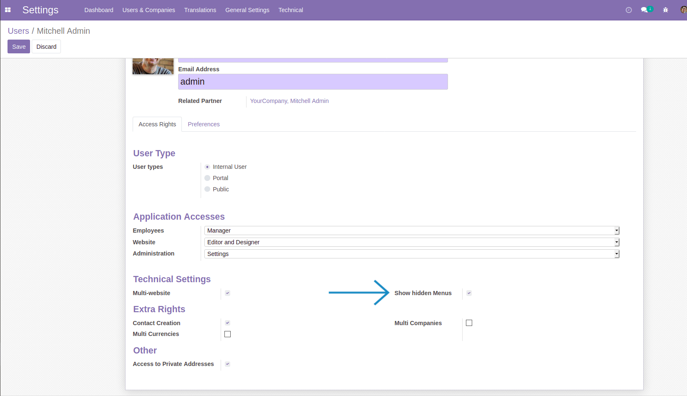

Go to Settings >> User & companies >> Users. Give acess of 'Show hidden Menues' group to users for who you want allow
Contacts, Discuss, Calendar and Employee menu.
User-guide
- Adds a group 'Show hidden Menues'.

- Allow to see Contacts, Discuss, Calendar and Employee menu who has acess of above group.